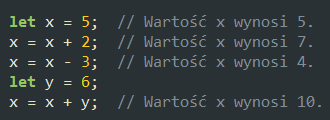
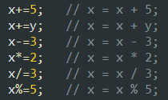
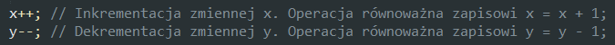

Zmiana wartości zmiennych
Podczas pisania programów często zachodzi konieczność zwiększenia lub zmniejszenia wartości zmiennej. Operację te przeprowadza się za pomocą przypisania wartości do zmiennej (operator =).
Zamiast pełnych zapisów operacji na zmiennych często używa się ich skróconej postaci.
Przypadkiem szczególnym jest zwiększenie lub zmniejszenie wartości zmiennej o jeden (wartość przechowywana w zmiennej musi być całkowita). Operacje te noszą nazwy: inkrementacja (zwiększenie o jeden) oraz dekrementacja (zmniejszenie o jeden).
Rozróżniamy dwa rodzaje inkrementacji i dwa rodzaje dekrementacji:
- postinkrementacja - program najpierw używa zmiennej, a potem zwiększa jej wartość o jeden.
- preinkrementacja - program najpierw zwiększa wartość zmiennej o jeden, a potem jej używa.
- postdekrementacja - program najpierw używa zmiennej, a potem zmniejsza jej wartość o jeden.
- predekrementacja - program najpierw zmniejsza wartość zmiennej o jeden, a potem jej używa.
Zadanie 12
Utwórz skrypt ilustrujący inkrementację i dekrementację zmiennych. W tym celu:
- zdefiniuj zmienną przechowującą liczbę całkowitą, a następnie wyświetl ją (wartość zmiennej poprzedź napisem, np. x = ).
- w nowej linii wyświetl wartość zmiennej podczas wykonywanej operacji (np. x++, wyświetl też odpowiedni napis).
- ponownie wyświetl wartość zmiennej poprzedzając ją napisem jak w pierwszym punkcie.
- zmień wartość zmiennej (nie twórz nowej) i powtórz czynności dla pozostałych operacji (++x, x--, --x).